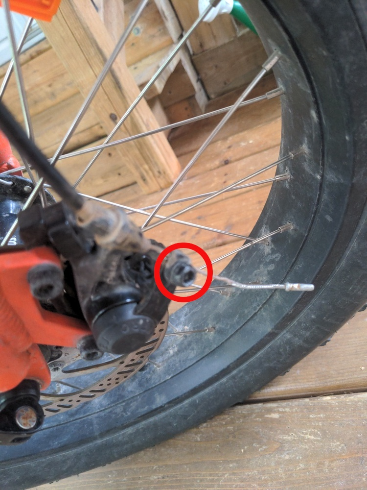
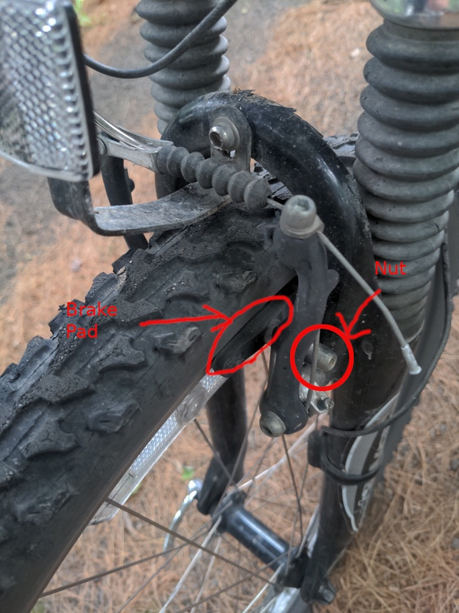

The brake system is made up of a caliper and brake pads which are attached to the wheel. With both traditional V-brakes and mechanical disc brakes (which my ebike has) they have a cable going from that system to the handlebar that corresponds to the brake of that wheel.
The end of that cable is going into a nut - see picture. The most common common adjustment is needed when that cable gets stretched so that it won't brake anymore. In that case:
I also found that squeezing the handlebar with the nut loosened let me tighten the cable more, but it also caused problems another time, so probably only do that if the above won't work.
You can also loosen or tighten the knobs on the handlebars - though the guy at Capital City Cycles (a former organization to get help with bike maintenance) said this is less important, more for emergency when you're out.
This more difficult kind of adjustment is needed as brake pads wear off on V-style brakes. On disc brakes, I haven't done it and it seems more difficult.
For V-style brakes, like on my mountain bike, first check if the brake pads need replacement. If you can still see treads on them, they're still good, and are probably just worn down so need to be adjusted to be closer to the wheel for the brakes to work well.
To adjust V-style brakes:
Put the bike upside down or on a bike rack.
Unhook the calipers (circled in the picture) by squeezing horizontally and putting the cable through the slot then releasing.
Remove each brake pad by unscrewing the nut attaching it (circled below). Be careful to keep all the washers / spacers in the same order.
Add some of the extra washers / spacers closer to the wheel so that the brake pad will be closer to the wheel. This might require trial and error.
Screw each brake pad back where it was, and align it well.
Test it by spinning the wheel by hand and pulling the brake to see if it hits the wheel squarely and works well.